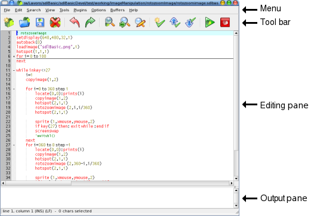

インターフェース
sdlBasicは現在インタープリターとともに自身のエディターを持っています。
当然望むならあなたの好みのエディターを使い続けることもできます。 sdlBasicのエディターはよく知られたSciTEのエディターを改変したもので、 (http://scintilla.sourceforge.net/
) その強力な機能を存分に提供をしてくれています。
SciTeを選択したのにはいくつかの理由があります:
- このエディターは、畳み込み、ハイライト等..多くの強力な機能をもっている良質なエディターだということ。
- sdlBasicと同じく多くのプラットフォームで使えること。
- フリーのソフトウエアであり、そのソースの改変、配布が自由に行えること。
sdlBasicエディターの編集中の画面:

解説：
-
メニュー： コマンドの選択します。
-
ツールバー：よく使用するコマンドを直接選択できます。
-
編集領域: sdlBasicのプログラムを編集できます。
-
出力領域： コマンドの出力、エラーメッセージなどを表示する。